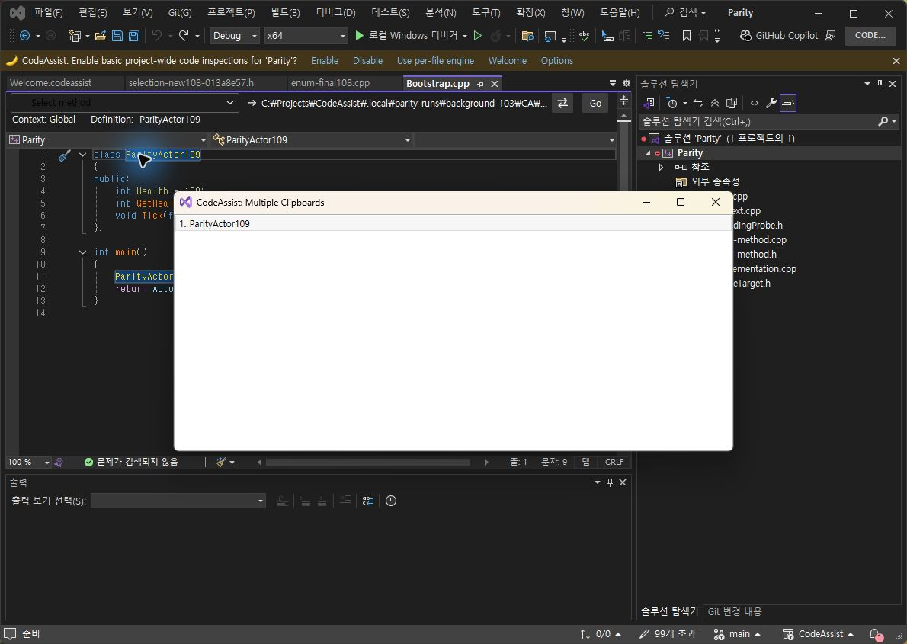
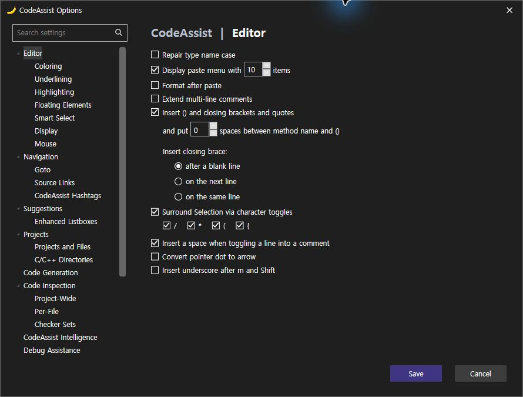
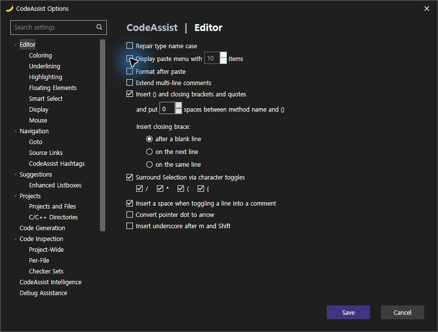

누락된 Display paste menu with 체크박스를 실제 설정·명령 분기와 연결했습니다. 끄면 Ctrl+Shift+V가 Edit.CycleClipboardRing으로 전달되고, 켜면 CA 메뉴가 열립니다. 공식 과거 변경 기록이 끄기 동작의 근거입니다. 현재 VA에서 끄기 분기를 직접 재실행한 것으로 계산하지 않습니다.
같은 문자열 복사와 Ctrl+Shift+V로 양쪽의 작은 메뉴를 촬영했습니다. CA는 커서 옆 표시·테마 배경으로 변경됐습니다. 아이콘 여백, 헤더 배치, 선택 테두리가 남아 있어 UI 완전 일치가 아닙니다.




CA 단독 실행 점검 5/5(100%): 끄면 개수 입력 비활성화, 저장 false 반영 후 기본 붙여넣기 실행, 켜면 목록 열림, Enter 선택·닫힘, Escape 취소. 105/106의 실행 버전을 results.json에 구분했습니다. 이 100%는 제품 전체 동기화율이 아닙니다. 검사 편집은 실행 취소했으며 메뉴 표시 설정은 true로 복구했습니다.
Core 테스트 295/295 통과. VS2019·Modern 빌드 및 설치 바이너리 6/6 일치. 문서 부분 명세 108/108(100%)는 전체 역분석 완료율 아님.
미완료: 메뉴 세부 배치·색상, 다른 누락 옵션, 라이트 테마, 전체 108개 기능 현재 실행 대조. 결과·촬영 해시 · 설치 검증 · 테스트 · 빌드
XERJ: 사용 — 클립보드 옵션·호출 경로 검색 후 소스·실행 확인.